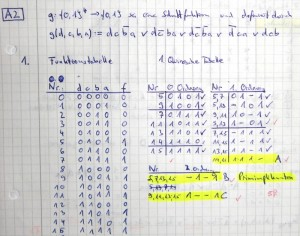
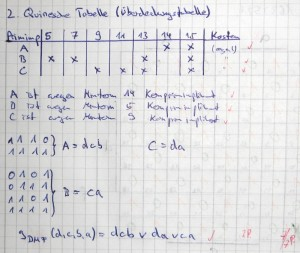

Das Quine-McCluskey-Verfahren wird angewendet, wenn man eine Schaltfunktion minimieren will. Es muss also eine Schaltfunktion gegeben sein. Es sollte eigentlich zusätzlich eine Kostenfunktion gegeben sein, aber meist ist das nicht der Fall.
Verfahren
Gegeben: Eine Schaltfunktion \(f:\{0,1\}^n \rightarrow \{0,1\}, \; n \in \mathbb{N}\) Schritt 1: Aufstellen der Funktionstabelle. Sie hat die Spalten
- „Nr.“, die bei 0 beginnt und bis $2^n - 1$ geht.
- Eine Spalte pro Funktionsparameter (z.B. $a, b, c, ...$)
- Eine Spalte für den Funktionswert $f(a,b,c,...)$
Schritt 2: Aufstellen der ersten Quineschen Tabelle 0ter Ordnung.
Sie hat die Spalten
- „Nr.“
- Eine Spalte pro Parameter
- „✓“ (Häkchen)
In der ersten Quineschen Tabelle stehen nur noch die Zeilen, deren Funktionswert 1 ist. Das sind die sogenannten Minterme. Zusätzlich sind sie nach Anzahl der 1er geordnet.
Schritt 3: \(i\)-tes Zusammenfassen
Nun erstellt man die erste Quinesche Tabelle \(i\)-ter Ordnung. Also beim ersten mal erster Ordnung, beim zweiten Mal zweiter Ordnung, ... Diese Tabellen haben alle die gleichen Spalten und die Zeilen-Anzahl kann sowohl wachsen als auch schrumpfen. Das \(i\) gibt dabei die Anzahl der „don't care“ Stellen an, also der Stellen die sowohl 0 als auch 1 sein können.
Um aus der ersten Quineschen Tabelle \((i-1)\)-ter Ordnung die erste Quinesche Tabelle \(i\)-ter Ordnung zu erstellen, geht man wie folgt vor:
- Vergleiche alle Zeilen, in denen sich die Anzahl der 1er um genau 1 unterscheidet:
- Unterscheiden sich Zeile Nr. x und Zeile Nr. y an nur einer Stelle, so schreibe in die Tabelle $i$ter Ordnung eine neue Zeile. Die Nummer dieser Zeile ist „x, y“ und sie hat an der Stelle, an der sich die Zeilen x und y unterschieden, ein don't care.
- Hake die Zeilen x und y in der Tabelle $(i-1)$-ter Ordnung ab
Es ist möglich, das Zeilen nicht abgehakt werden, weil sie sich mit keiner Zeile zusammenfassen lassen. Das ist ok. Sobald in einem Schritt keine Zusammenfassung mehr möglich ist, ist man hier fertig. Falls noch eine Möglichkeit besteht, geht man wieder in Schritt 3.
Nun schreibt man alle Zeilen auf, die nicht abgehakt sind. Das sind die Primimplikanten.
Schritt 4: Aufstellen der zweiten Quineschen Tabelle
Die zweite Quinesche Tabelle (auch Überdeckungstabelle genannt) hat folgende Spalten:
- Primimplikanten
- Eine Spalte pro Minterm. Die Beschriftung ist dabei eine Nr.
- Eine Spalte „Kosten“
Nun macht man in den Zellen ein Kreuz, in denen der Primimplikant den Minterm abdeckt (also wenn die Nr. im Namen des Minterms vorkommt). Die Kosten muss man pro Primimplikant berechnen.
Schritt 5: Vereinfachen der zweiten Quineschen Tabelle
Dieser Schritt erinnert mich irgendwie an Sudoku.
- Zeilendominanz: Hat eine Zeile a nur x-e an Stellen, wo auch eine andere Zeile b x-e hat und ist Zeile b nicht teurer als a, so kann Zeile a gestrichen werden. Also: Es wird die Zeile mit weniger x gestrichen
- Spaltendominanz: Überdeckt eine Spalte eine andere Spalte mit ihren x-en, so kann die Spalte mit mehr x-en gestrichen werden.
Schritt 6: Identifizieren von Kernprimimplikanten.
Wenn eine Zeile als einzige an einer bestimmten Spalte ein x hat, ist der zugehörige Primimplikant ein Kernprimimplikant. Er muss auf jeden Fall in der Minimalform vorkommen. Diesen schreibt man sich also auf, Streicht die Zeile und alle Spalten, an denen der Kernprimimplikant ein x hatte. Dann geht man zurück zu Schritt 5.
Gab es keinen Kernprimimplikanten, geht man zu Schritt 7.
Schritt 7: Handarbeit
Ich muss mal nach einem Beispiel suchen, aber ich glaube es ist möglich, dass man die zweite Quinesche Tabelle ab einem gewissen Punkt nicht mehr vereinfachen kann, aber dennoch Zeilen und Spalten übrig sind. Dann muss man „durch scharfes Hinsehen“ (also Brute-Force) die Minimalform finden, oder? Hier bin ich mir nicht ganz sicher.
Beispiele
Die folgende Aufgabe ist vom Übungsblatt 7 (WS 2012/2013). Herr Terlemez hat mir freundlicherweise erlaubt, sie hier verwenden zu dürfen. (Die offiziellen Aufgaben und Lösungen sind passwortgeschützt.)
Aufgabe: Gegeben sei die Schaltfunktion
\(g(d,c,b,a) := dc \bar b a \lor d \bar c ba \lor d \bar c \bar b a \lor \bar d ca \lor dcb\)
- Bestimmen Sie alle Primimplikanten von $g$ mit Hilfe der 1. Quineschen Tabelle des Quine-McCluskey-Verfahrens.
- Geben Sie die Überdeckungstabelle (2. Quinesche Tabelle) für die gefundenen Primimpikanten an (ohne Vereinfachung). Lesen Sie eine disjunktive Minimalform von $g$ ab.
Lösung: (Habe gerade leider keine Zeit, diese abzutippen. Kommt vielleicht noch.)
{kind=link}

{kind=link}

Quellen
Ich habe diesen Artikel mit meinem Wissen aus den Folien (DT-VL12), der Vorlesung und dem Tutorium erstellt.